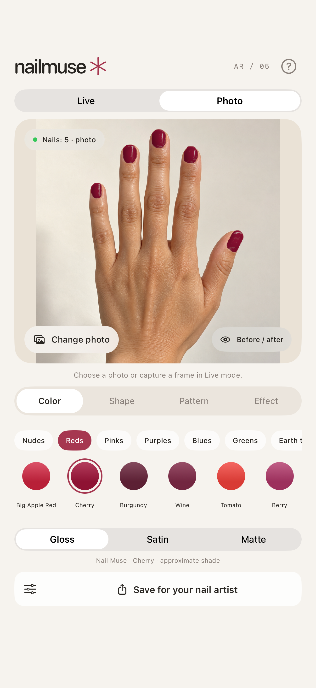

Your little nail studio
Your next manicure.
Try it first.
Explore colors, shapes and nail art on your own hand—with live camera try-on or a photo.
A preview to help you choose a look. Screen colors, finishes and extensions are approximate.

Find your color.
Explore 48 screen shades, from understated nudes to bright reds and deeper tones.
Make it your own.
Try shapes, lengths, French tips, patterns and effects including cat eye and chrome.
Bring the idea along.
Compare before and after, then save or share your look with your nail artist.
A little help.
Everything in one place.
Get comfortable with the app and see how your photos, preferences and support messages are handled.
Support
Getting started, camera tips, photo mode and a direct way to contact the developer.
02 / YOUR DATAPrivacy Policy
What stays on your iPhone, what happens when you share, and how this website works.
03 / USING THE APPTerms of Use
A clear explanation of the preview, your images and the terms that apply.